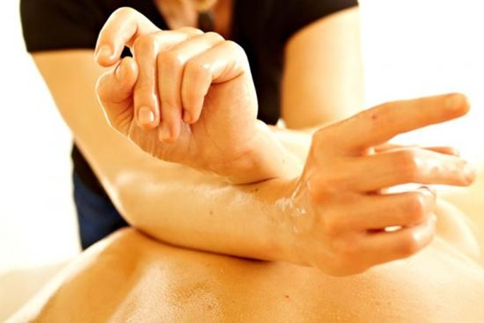
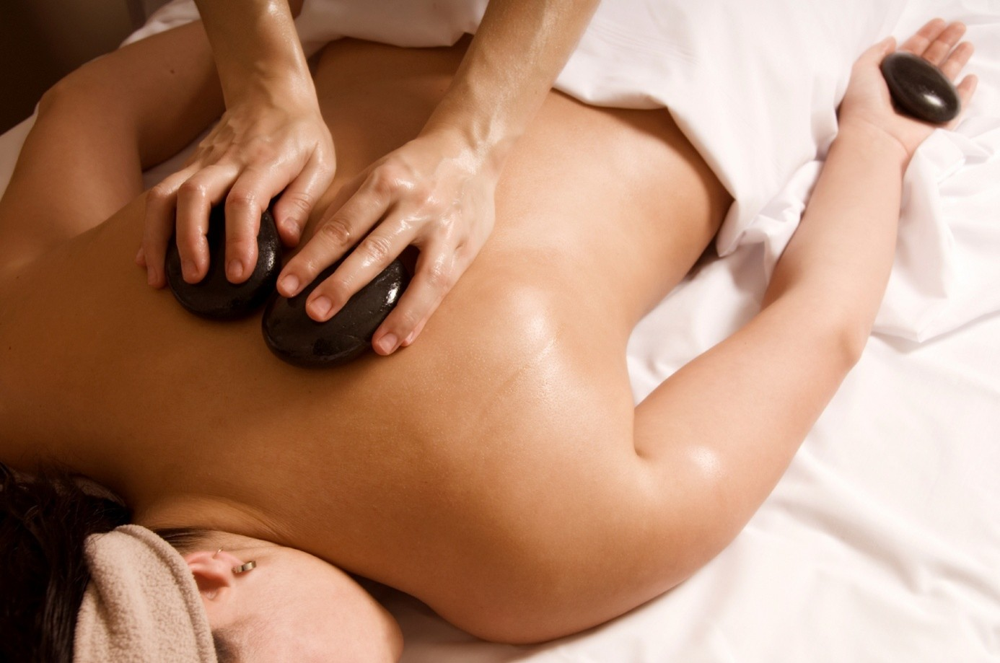
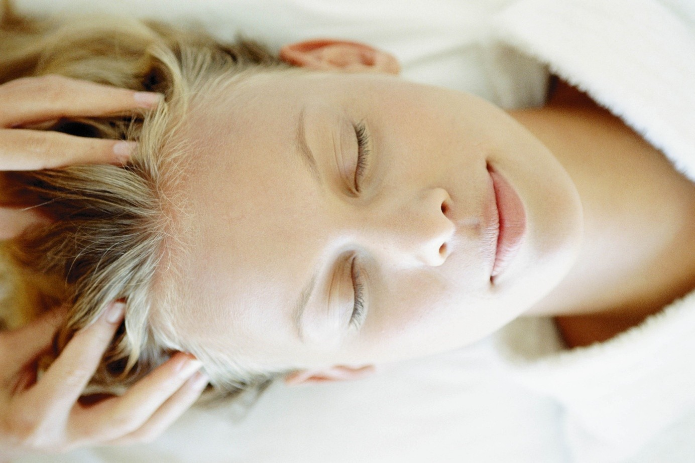
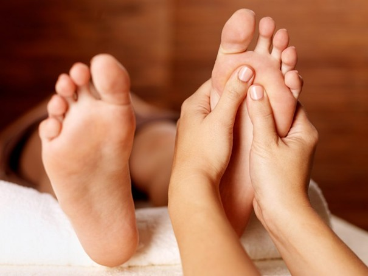
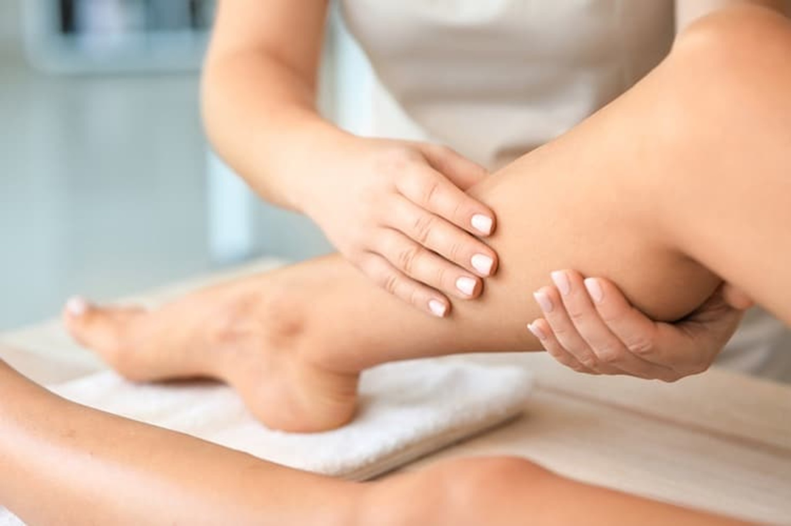
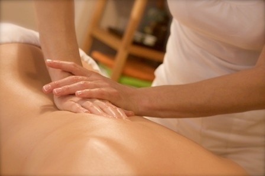
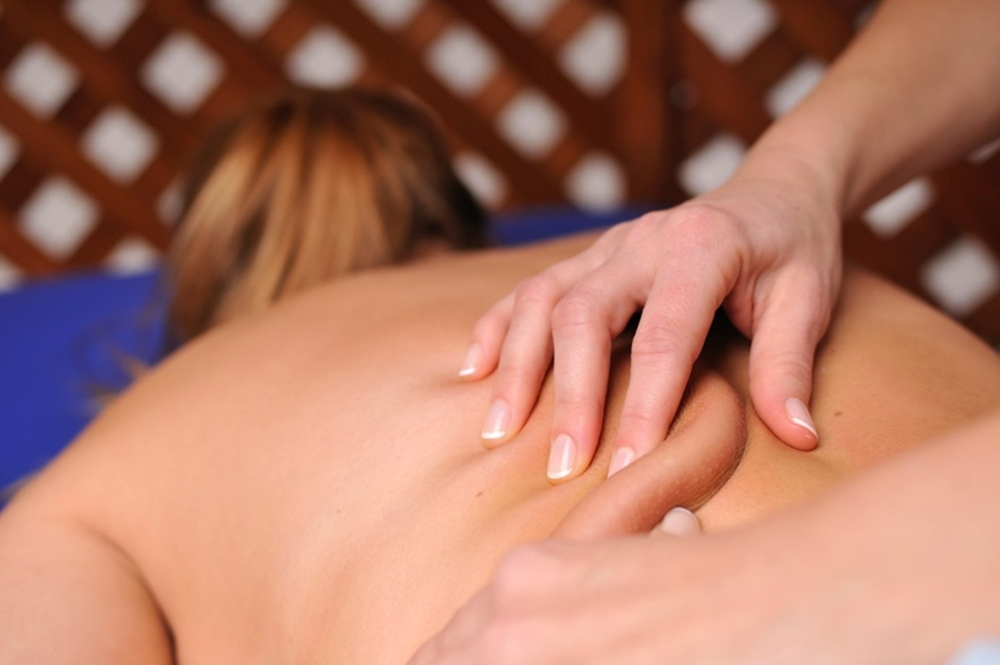

Hlboká relaxácia a regenerácia tela aj duše

Perla medzi masážami Havajská masáž Lomi – lomi „milujúce ruky“ je charakteristická dlhými plynulými rytmickými ťahmi dlaní a predlaktí s využitím váhy a ťažiska tela. Samotný rytmus vlny (prílivu a odlivu) sa stáva súčasťou vnútorného naladenia maséra.
Je to jedna z najviac uvoľňujúcich relaxačných masáží, intenzívne uvoľňuje svalové napätie a stimuluje krvný aj lymfatický obeh.
V spojení s láskavou energiou prijatia harmonizuje telo aj dušu, vyvoláva pozitívne emócie a umožňuje hlbokú relaxáciu. Odporúča sa pri vyčerpanosti, psychickej záťaži a je ideálna pre regeneráciu tela po fyzickej záťaži.

Havajská masáž Lomi – lomi v kombinácii s terapeutickou silou tepla Lávových kameňov.
Nahriate čadičové kamene majú schopnosť absorbovať, udržiavať a následne odovzdávať teplo, ktoré rozširuje cievy, čím sa zvyšuje prekrvenie pokožky, podkožia a prísun kyslíka do tkanív.
Teplo kameňov preniká hlboko do tkanív, uvoľňuje napätie, stuhnuté svaly a kĺby. Pomáha zmierňovať chronické bolesti. Masáž podporuje tok lymfy v tele, detoxikáciu organizmu a zmierňuje prejavy celulitídy.

Antistresová masáž hlavy je zameraná na premasírovanie a uvoľnenie svalov v oblasti hlavy, krčnej chrbtice, šije, ramien, tváre a dekoltu.
Robí sa zľahka, jemne v rovnomernom rytme.
Zlepšuje prekrvenie pokožky hlavy, podporuje rast vlasov, pomáha pri bolestiach hlavy, migréne.
Uvoľňuje nahromadené napätie a stres, podporuje lepší spánok.

Na chodidlách sa nachádzajú mnohé nervové zakončenia, ktoré sú prepojené s vnútornými a vonkajšími orgánmi v tele prostredníctvom energetických dráh.
Reflexná masáž chodidiel využíva tlak a trenie reflexných zón na nohách, ktoré zodpovedajú konkrétnym vnútorným orgánom a častiam tela. Masážou sa docieli ich stimulácia a naštartujú sa samoliečiace procesy.
Masáž zároveň reflexne pozitívne vplýva aj na činnosť endokrinných žliaz, na krvný obeh, tok lymfy a imunitný systém. Uvoľňuje napätie svalov a šliach na chodidlách.
V 90 minútovej variante je zahrnutá aj klasická masáž nôh.

Manuálna lymfodrenáž je jemná technika zameraná na podporu funkcie lymfatického systému, ktorý podobne ako cievny systém prechádza celým telom. Nemá však vlastnú pumpu, preto je odkázaný na pohyb svalov, dýchanie alebo vonkajšiu stimuláciu.
Lymfatický systém odvádza tkanivový mok naspäť do krvného obehu. Pomáha telu zbaviť sa odpadových látok a nahromadených toxínov. Je dôležitou súčasťou imunitného systému.
Masáž sa vykonáva pomaly, jemným tlakom s cieľom uvoľniť lymfatické uzliny a zlepšiť prietok lymfy v celom tele. Robí sa bez použitia oleja a v porovnaní s inými technikami je časovo náročnejšia. Zlepšuje prekrvenie, uľavuje žilovému systému, pomáha pri pocite ťažkých nôh. Zmierňuje prejavy celulitídy.
Je vysoko účinná na zmiernenie opuchov. Pomáha pri regenerácii organizmu po fyzickej záťaži.

Klasická masáž je základom všetkých masáží. Uvoľňuje stuhnuté, bolestivé a preťažené svaly a napomáha ich regenerácii. Zlepšuje prekrvenie tkanív, čím sa do svalov dostáva viac kyslíka a urýchľuje odplavovanie odpadových látok.
Odbúrava stres, napätie a napomáha k celkovej relaxácii.
Môže mať upokojujúci alebo tonizačný účinok v závislosti od intenzity a výberu masérskych hmatov (trenie, vytieranie, roztieranie, hnetenie a tepanie).

Mäkké a myofasciálne techniky sú zamerané na uvoľňovanie, prekrvenie a obnovu funkcií mäkkých tkanív – kože, podkožia a spojivových tkanív – fascií.
Vykonávajú sa podľa potreby jemnejším alebo silnejším – hlbším tlakom bez použitia oleja, čím reflexne pôsobia na príslušné body.
Techniky sú zamerané na uvoľnenie krčnej chrbtice, blokácií chrbta v medzilopatkovej a bedrovej oblasti. Odstraňujú blokády z jednostranného preťažovania, či nesprávnych pohybových stereotypov. Pomáhajú znižovať chronické napätie svalov a zvyšujú rozsah pohybu.
Pomáhajú pri bolestiach hlavy a migréne. V 90 minútovej variante je zahrnutá aj klasická masáž chrbta.